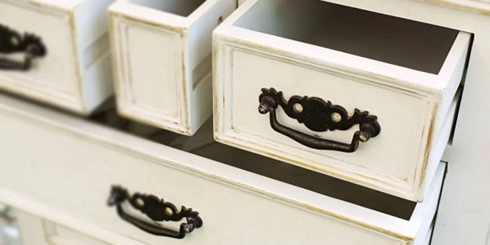

Taller de reciclado de muebles
Todo objeto que nos rodea se puede transformar y adaptarse a nuestras necesidades.
En Proyecto Re vas a encontrar muebles reciclados, únicos, y mucho amor en cada trabajo.
Todo objeto que nos rodea se puede transformar y adaptarse a nuestras necesidades.
En Proyecto Re vas a encontrar muebles reciclados, únicos, y mucho amor en cada trabajo.